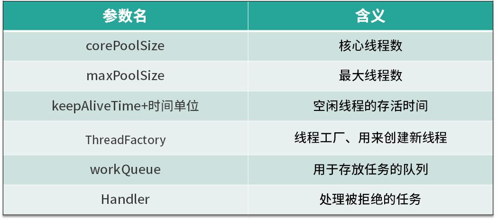
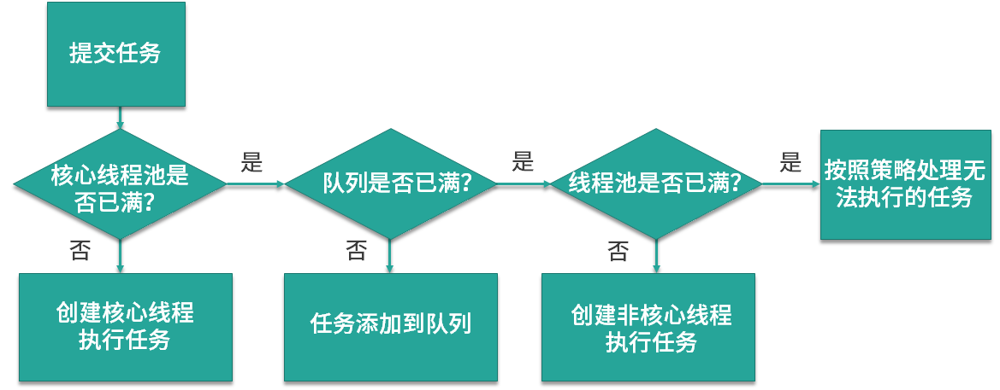
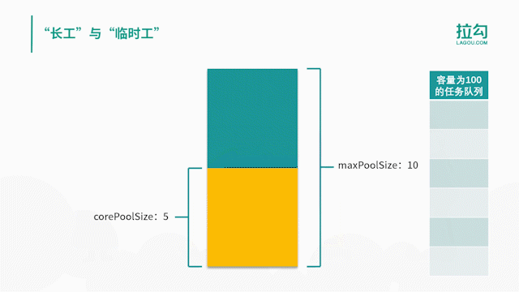

- 00 由点及面，搭建你的 Java 并发知识网.md
- 01 为何说只有 1 种实现线程的方法？.md
- 02 如何正确停止线程？为什么 volatile 标记位的停止方法是错误的？.md
- 03 线程是如何在 6 种状态之间转换的？.md
- 04 waitnotifynotifyAll 方法的使用注意事项？.md
- 05 有哪几种实现生产者消费者模式的方法？.md
- 06 一共有哪 3 类线程安全问题？.md
- 07 哪些场景需要额外注意线程安全问题？.md
- 08 为什么多线程会带来性能问题？.md
- 09 使用线程池比手动创建线程好在哪里？.md
- 10 线程池的各个参数的含义？.md
- 11 线程池有哪 4 种拒绝策略？.md
- 12 有哪 6 种常见的线程池？什么是 Java8 的 ForkJoinPool？.md
- 13 线程池常用的阻塞队列有哪些？.md
- 14 为什么不应该自动创建线程池？.md
- 15 合适的线程数量是多少？CPU 核心数和线程数的关系？.md
- 16 如何根据实际需要，定制自己的线程池？.md
- 17 如何正确关闭线程池？shutdown 和 shutdownNow 的区别？.md
- 18 线程池实现“线程复用”的原理？.md
- 19 你知道哪几种锁？分别有什么特点？.md
- 20 悲观锁和乐观锁的本质是什么？.md
- 21 如何看到 synchronized 背后的“monitor 锁”？.md
- 22 synchronized 和 Lock 孰优孰劣，如何选择？.md
- 23 Lock 有哪几个常用方法？分别有什么用？.md
- 24 讲一讲公平锁和非公平锁，为什么要“非公平”？.md
- 25 读写锁 ReadWriteLock 获取锁有哪些规则？.md
- 26 读锁应该插队吗？什么是读写锁的升降级？.md
- 27 什么是自旋锁？自旋的好处和后果是什么呢？.md
- 28 JVM 对锁进行了哪些优化？.md
- 29 HashMap 为什么是线程不安全的？.md
- 30 ConcurrentHashMap 在 Java7 和 8 有何不同？.md
- 31 为什么 Map 桶中超过 8 个才转为红黑树？.md
- 32 同样是线程安全，ConcurrentHashMap 和 Hashtable 的区别.md
- 33 CopyOnWriteArrayList 有什么特点？.md
- 34 什么是阻塞队列？.md
- 35 阻塞队列包含哪些常用的方法？add、offer、put 等方法的区别？.md
- 36 有哪几种常见的阻塞队列？.md
- 37 阻塞和非阻塞队列的并发安全原理是什么？.md
- 38 如何选择适合自己的阻塞队列？.md
- 39 原子类是如何利用 CAS 保证线程安全的？.md
- 40 AtomicInteger 在高并发下性能不好，如何解决？为什么？.md
- 41 原子类和 volatile 有什么异同？.md
- 42 AtomicInteger 和 synchronized 的异同点？.md
- 43 Java 8 中 Adder 和 Accumulator 有什么区别？.md
- 44 ThreadLocal 适合用在哪些实际生产的场景中？.md
- 45 ThreadLocal 是用来解决共享资源的多线程访问的问题吗？.md
- 46 多个 ThreadLocal 在 Thread 中的 threadlocals 里是怎么存储的？.md
- 47 内存泄漏——为何每次用完 ThreadLocal 都要调用 remove()？.md
- 48 Callable 和 Runnable 的不同？.md
- 49 Future 的主要功能是什么？.md
- 50 使用 Future 有哪些注意点？Future 产生新的线程了吗？.md
- 51 如何利用 CompletableFuture 实现“旅游平台”问题？.md
- 52 信号量能被 FixedThreadPool 替代吗？.md
- 53 CountDownLatch 是如何安排线程执行顺序的？.md
- 54 CyclicBarrier 和 CountdownLatch 有什么异同？.md
- 55 Condition、object.wait() 和 notify() 的关系？.md
- 56 讲一讲什么是 Java 内存模型？.md
- 57 什么是指令重排序？为什么要重排序？.md
- 58 Java 中的原子操作有哪些注意事项？.md
- 59 什么是“内存可见性”问题？.md
- 60 主内存和工作内存的关系？.md
- 61 什么是 happens-before 规则？.md
- 62 volatile 的作用是什么？与 synchronized 有什么异同？.md
- 63 单例模式的双重检查锁模式为什么必须加 volatile？.md
- 64 你知道什么是 CAS 吗？.md
- 65 CAS 和乐观锁的关系，什么时候会用到 CAS？.md
- 66 CAS 有什么缺点？.md
- 67 如何写一个必然死锁的例子？.md
- 68 发生死锁必须满足哪 4 个条件？.md
- 69 如何用命令行和代码定位死锁？.md
- 70 有哪些解决死锁问题的策略？.md
- 71 讲一讲经典的哲学家就餐问题.md
- 72 final 的三种用法是什么？.md
- 73 为什么加了 final 却依然无法拥有“不变性”？.md
- 74 为什么 String 被设计为是不可变的？.md
- 75 为什么需要 AQS？AQS 的作用和重要性是什么？.md
- 76 AQS 的内部原理是什么样的？.md
- 77 AQS 在 CountDownLatch 等类中的应用原理是什么？.md
- 78 一份独家的 Java 并发工具图谱.md
10 线程池的各个参数的含义？
本课时我们主要学习线程池各个参数的含义，并重点掌握线程池中线程是在什么时机被创建和销毁的。
线程池的参数

首先，我们来看下线程池中各个参数的含义，如表所示线程池主要有 6 个参数，其中第 3 个参数由 keepAliveTime + 时间单位组成。我们逐一看下它们各自的含义，corePoolSize 是核心线程数，也就是常驻线程池的线程数量，与它对应的是 maximumPoolSize，表示线程池最大线程数量，当我们的任务特别多而 corePoolSize 核心线程数无法满足需求的时候，就会向线程池中增加线程，以便应对任务突增的情况。
线程创建的时机

接下来，我们来具体看下这两个参数所代表的含义，以及线程池中创建线程的时机。如上图所示，当提交任务后，线程池首先会检查当前线程数，如果此时线程数小于核心线程数，比如最开始线程数量为 0，则新建线程并执行任务，随着任务的不断增加，线程数会逐渐增加并达到核心线程数，此时如果仍有任务被不断提交，就会被放入 workQueue 任务队列中，等待核心线程执行完当前任务后重新从 workQueue 中提取正在等待被执行的任务。
此时，假设我们的任务特别的多，已经达到了 workQueue 的容量上限，这时线程池就会启动后备力量，也就是 maximumPoolSize 最大线程数，线程池会在 corePoolSize 核心线程数的基础上继续创建线程来执行任务，假设任务被不断提交，线程池会持续创建线程直到线程数达到 maximumPoolSize 最大线程数，如果依然有任务被提交，这就超过了线程池的最大处理能力，这个时候线程池就会拒绝这些任务，我们可以看到实际上任务进来之后，线程池会逐一判断 corePoolSize、workQueue、maximumPoolSize，如果依然不能满足需求，则会拒绝任务。
corePoolSize 与 maximumPoolSize
通过上面的流程图，我们了解了 corePoolSize 和 maximumPoolSize 的具体含义，corePoolSize 指的是核心线程数，线程池初始化时线程数默认为 0，当有新的任务提交后，会创建新线程执行任务，如果不做特殊设置，此后线程数通常不会再小于 corePoolSize ，因为它们是核心线程，即便未来可能没有可执行的任务也不会被销毁。随着任务量的增加，在任务队列满了之后，线程池会进一步创建新线程，最多可以达到 maximumPoolSize 来应对任务多的场景，如果未来线程有空闲，大于 corePoolSize 的线程会被合理回收。所以正常情况下，线程池中的线程数量会处在 corePoolSize 与 maximumPoolSize 的闭区间内。
“长工”与“临时工”
我们可以把 corePoolSize 与 maximumPoolSize 比喻成长工与临时工，通常古代一个大户人家会有几个固定的长工，负责日常的工作，而大户人家起初肯定也是从零开始雇佣长工的。假如长工数量被老爷设定为 5 人，也就对应了 corePoolSize，不管这 5 个长工是忙碌还是空闲，都会一直在大户人家待着，可到了农忙或春节，长工的人手显然就不够用了，这时就需要雇佣更多的临时工，这些临时工就相当于在 corePoolSize 的基础上继续创建新线程，但临时工也是有上限的，也就对应了 maximumPoolSize，随着农忙或春节结束，老爷考虑到人工成本便会解约掉这些临时工，家里工人数量便会从 maximumPoolSize 降到 corePoolSize，所以老爷家的工人数量会一致保持在 corePoolSize 和 maximumPoolSize 的区间。

在这里我们用一个动画把整个线程池变化过程生动地描述出来，比如线程池的 corePoolSize 为 5，maximumPoolSize 为 10，任务队列容量为 100，随着任务被提交，我们的线程数量会从 0 慢慢增长到 5，然后就不再增长了，新的任务会被放入队列中，直到队列被塞满，然后在 corePoolSize 的基础上继续创建新线程来执行队列中的任务，线程会逐渐增加到 maximumPoolSize， 然后线程数不再增加，如果此时仍有任务被不断提交，线程池就会拒绝任务。随着队列中任务被执行完，被创建的 10 个线程现在无事可做了，这时线程池会根据 keepAliveTime 参数来销毁线程，已达到减少内存占用的目的。
通过对流程图的理解和动画演示，我们总结出线程池的几个特点。
- 线程池希望保持较少的线程数，并且只有在负载变得很大时才增加线程。
- 线程池只有在任务队列填满时才创建多于 corePoolSize 的线程，如果使用的是无界队列（例如 LinkedBlockingQueue），那么由于队列不会满，所以线程数不会超过 corePoolSize。
- 通过设置 corePoolSize 和 maximumPoolSize 为相同的值，就可以创建固定大小的线程池。
- 通过设置 maximumPoolSize 为很高的值，例如 Integer.MAX_VALUE，就可以允许线程池创建任意多的线程。
keepAliveTime+时间单位
第三个参数是 keepAliveTime + 时间单位，当线程池中线程数量多于核心线程数时，而此时又没有任务可做，线程池就会检测线程的 keepAliveTime，如果超过规定的时间，无事可做的线程就会被销毁，以便减少内存的占用和资源消耗。如果后期任务又多了起来，线程池也会根据规则重新创建线程，所以这是一个可伸缩的过程，比较灵活，我们也可以用 setKeepAliveTime 方法动态改变 keepAliveTime 的参数值。
ThreadFactory
第四个参数是 ThreadFactory，ThreadFactory 实际上是一个线程工厂，它的作用是生产线程以便执行任务。我们可以选择使用默认的线程工厂，创建的线程都会在同一个线程组，并拥有一样的优先级，且都不是守护线程，我们也可以选择自己定制线程工厂，以方便给线程自定义命名，不同的线程池内的线程通常会根据具体业务来定制不同的线程名。
workQueue 和 Handler
最后两个参数是 workQueue 和 Handler，它们分别对应阻塞队列和任务拒绝策略，在后面的课时会对它们进行详细展开讲解。
在本课时，介绍了线程池的各个参数的含义，以及如果有任务提交，线程池是如何应对的，新线程是在什么时机下被创建和销毁等内容，你有没有觉得线程池的设计很巧妙呢？
© 2019 - 2023 Liangliang Lee. Powered by gin and hexo-theme-book.